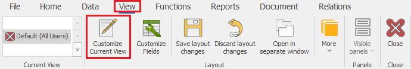

Customize Current View
The Customize Current View mode is used to edit the way System forms look. You will find that mode deactivated by default when opening a form. This way you can't move fixed tabs. The Customize Current View mode unlocks the following functions:
- Working with Views;
- Adding, removing, and resizing Regions;
- Adding, removing, and repositioning Panels;
- Adding, removing, repositioning, adjusting the Form and the color of the tabs;
- Adding or removing the short keys;
- Grouping and sorting;
- Setting default values;
Activate Customize Current View mode through Command ribbon >> View >> Customize Current View (or with the short key Ctr+L) or automatically by choosing the Customize fields option:

Before you exit the form, you should save the View if you need to save the changes.